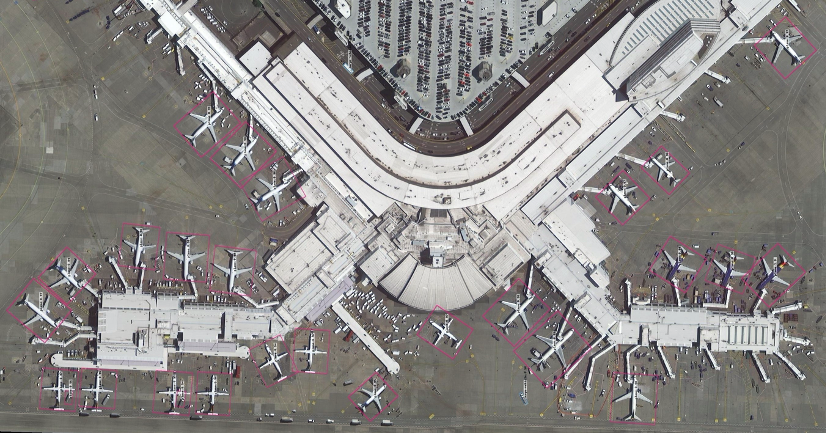
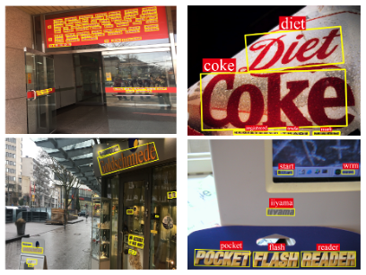
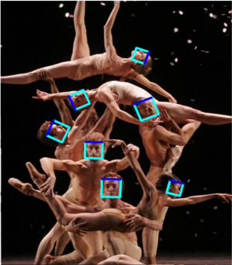
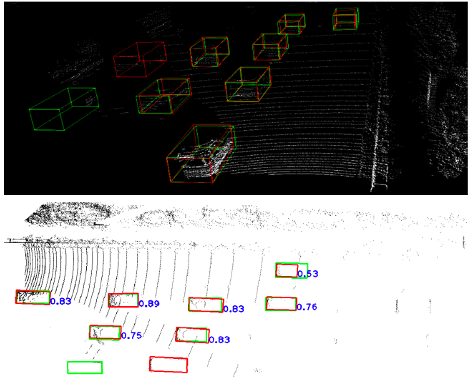
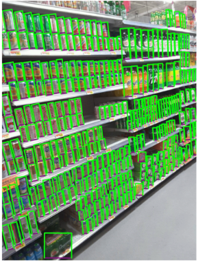

Introduction to Rotation Detection¶
Arbitrary-oriented objects are ubiquitous for detection across visual datasets, such as aerial images, scene text, face and 3D objects, retail scenes, etc. Compared with the large literature on horizontal object detection, research in oriented object detection is relatively in its earlier stage, with many open problems to solve.
Rotation detection techniques have been applied to the following applications:
Aerial images
Scene text
Face
3D object detection
Retail scenes
and more…
In this repository, we mainly focus on aerial images due to its challenging.
Readers are referred to the following survey for more technical details about aerial image rotation detection: DOTA-DOAI